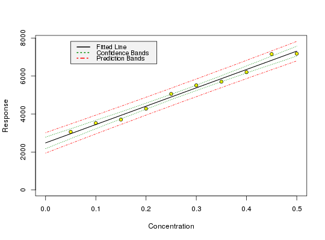

data(din32645)
Sample dataset to test the package.
A dataframe containing 10 rows of x and y values.
DIN 32645 (equivalent to ISO 11843), Beuth Verlag, Berlin, 1994
Dintest. Plugin for MS Excel for evaluations of calibration data. Written by Georg Schmitt, University of Heidelberg. Formerly available from the Website of the University of Heidelberg.
Currie, L. A. (1997) Nomenclature in evaluation of analytical methods including detection and quantification capabilities (IUPAC Recommendations 1995). Analytica Chimica Acta 391, 105 - 126.
data(din32645) m <- lm(y ~ x, data = din32645) calplot(m)
## Prediction of x with confidence interval (prediction <- inverse.predict(m, 3500, alpha = 0.01))$Prediction [1] 0.1054792 $`Standard Error` [1] 0.02215619 $Confidence [1] 0.07434261 $`Confidence Limits` [1] 0.03113656 0.17982178# This should give 0.07434 according to test data from Dintest, which # was collected from Procontrol 3.1 (isomehr GmbH) in this case round(prediction$Confidence,5)[1] 0.07434## Critical value: (crit <- lod(m, alpha = 0.01, beta = 0.5))$x [1] 0.0698127 $y 1 3155.393# According to DIN 32645, we should get 0.07 for the critical value # (decision limit, "Nachweisgrenze") round(crit$x, 2)[1] 0.07# and according to Dintest test data, we should get 0.0698 from round(crit$x, 4)[1] 0.0698## Limit of detection (smallest detectable value given alpha and beta) # In German, the smallest detectable value is the "Erfassungsgrenze", and we # should get 0.14 according to DIN, which we achieve by using the method # described in it: lod.din <- lod(m, alpha = 0.01, beta = 0.01, method = "din") round(lod.din$x, 2)[1] 0.14## Limit of quantification # This accords to the test data coming with the test data from Dintest again, # except for the last digits of the value cited for Procontrol 3.1 (0.2121) (loq <- loq(m, alpha = 0.01))$x [1] 0.2119575 $y 1 4528.787round(loq$x,4)[1] 0.212# A similar value is obtained using the approximation # LQ = 3.04 * LC (Currie 1999, p. 120) 3.04 * lod(m,alpha = 0.01, beta = 0.5)$x[1] 0.2122306